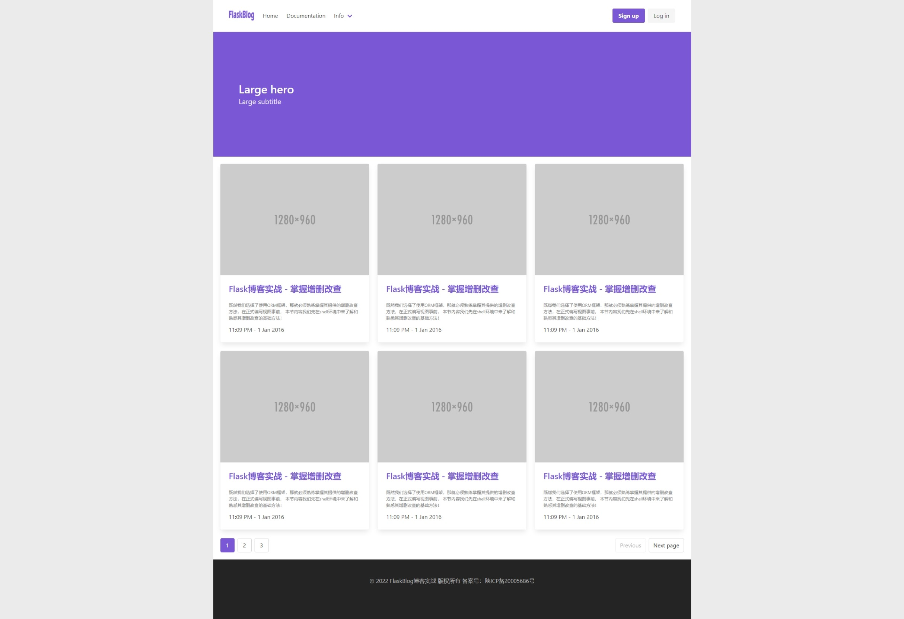

实现博客首页视图及样式
本套教程是一个Flask实战类教程，html/css/javascript等相关技术栈不会过多的去详细解释，那么就需要各位初学者尽可能的先去掌握这些基础知识，当然本套教程不需要你对其非常精通，但最起码得做到能看懂其意思！
静态文件
静态文件是相对动态的web应用而言的，一般是指css和js文件！ 网站应用部署的时候，这些静态文件通常由Nginx等静态文件服务器处理，但是在开发过程中， Flask 也能做好 这项工作。
一般，Flask的静态文件位于应用的 /static 中，模板文件位于应用的 /templates中。
因此上，我们需要在app/blog/目录下分别创建一个static及templates的文件夹，用来对应的存放博客的静态文件及模板文件！
创建博客首页视图
在app/blog/views.py中通过蓝图的方式创建首页视图,代码如下：
Flask 会自动为你配置 Jinja2 模板引擎。
使用 render_template() 方法可以渲染模板，你只要提供模板名称和需要 作为参数传递给模板的变量就行了。
from flask import Blueprint, render_template
bp = Blueprint('blog', __name__, url_prefix='/blog', template_folder='templates', static_folder='static')
def index():
"""首页视图
"""
posts = [1,2,3,4,5,6]
return render_template('index.html', posts=posts)
在之前的蓝图应用章节我们对蓝图的使用做了大概的说明，其中这里新增了几个参数需要单独拉出来说一下，Blueprint类的template_folder参数就是指定该蓝图需要独立使用的模板文件夹，这个路径是相对路径或绝对路径，static_folder参数即设置静态文件目录，这样做的好处是我们就可以把每个功能模块拆分，静态文件和模板文件也可以独立拆分，这个思路是有借鉴django项目的布局方式，利于维护和后期的动态扩展！
index函数则就是一个python的普通函数，只是在返回的时候我们使用了Flask提供的render_template方法来动态渲染模板和载入上下文数据，启动posts=posts就是我们构造的一个上下文演示数据，下来将会在模板文件中使用该上下文，这里需要注意的是我们并没有使用装饰器的方法去绑定url，下来我们要介绍一个url和视图分离的url方式！
add_url_rule方法分离视图与url
在项目目录（RealProject）的__init__.py中的工厂函数create_app底部创建如下代码
def create_app(test_config=None):
app = Flask(__name__, instance_relative_config=True)
# 省略中间代码
...
return app
def register_bp(app:Flask):
# 注册视图方法
from app.blog import views as blog
# 注册蓝图
app.register_blueprint(blog.bp)
# 首页url
app.add_url_rule(rule='/', endpoint='index', view_func=blog.index)
add_url_rule的参数解析：
- rule参数是真正的url，url开头必须以斜杠开始；
- endpoint参数是该url的端点，类似于django的name参数，它的作用是方便反查该url，一般的加载解析顺序是访问该url会先找该端点再找其关联的视图，然后开始处理逻辑，相当于url的id；
- view_func参数则是该url指向的函数，绑定url与函数！
之后只需要将register_bp函数引入工厂函数中即可,工厂函数代码修改如下：
def create_app(test_config=None):
app = Flask(__name__, instance_relative_config=True)
if test_config is None:
CONFIG_PATH = BASE_DIR / 'RealProject/settings.py'
app.config.from_pyfile(CONFIG_PATH, silent=True)
else:
# test_config为一个字典
app.config.from_mapping(test_config)
db.init_app(app)
migrate.init_app(app, db)
# 注册视图
register_bp(app)
# 注册模型
from app.blog import models
from app.auth import models
return app
创建博客首页模板文件
在app/blog/templates目录下创建index.html,这就是render_template方法第一个参数对应的模板文件，内容如下：
模板中用到的相关Jinja2模板语法，请自行查询文档理解
- Jinja2 模板文档 ： https://jinja.palletsprojects.com/en/3.1.x/templates/
<!DOCTYPE html>
<html lang="cn">
<head>
<meta charset="UTF-8">
<meta http-equiv="X-UA-Compatible" content="IE=edge">
<meta name="viewport" content="width=device-width, initial-scale=1.0">
<title>{% block title %}{% endblock title %}</title>
<link rel="stylesheet" href="{{ url_for('blog.static', filename='css/style.css') }}">
<link rel="stylesheet" href="{{ url_for('blog.static', filename='css/buefy.min.css') }}">
{% block extra_head_style %}{% endblock extra_head_style %}
</head>
<body>
<div id="app" style="height:100%;">
<div class="container is-fluid1" style="height:100%; ">
<div class="is-block" style="height:100%;">
<!-- 导航 -->
{% block navbar %}
<template>
<b-navbar spaced shadow>
<template #brand>
<b-navbar-item>
<img src="{{ url_for('blog.static', filename='img/logo.png') }}" alt="FlaskBlog">
</b-navbar-item>
</template>
<template #start>
<b-navbar-item href="#">
Home
</b-navbar-item>
<b-navbar-item href="#">
Documentation
</b-navbar-item>
<b-navbar-dropdown label="Info">
<b-navbar-item href="#">
About
</b-navbar-item>
<b-navbar-item href="#">
Contact
</b-navbar-item>
</b-navbar-dropdown>
</template>
<template #end>
<b-navbar-item tag="div">
<div class="buttons">
<a class="button is-primary">
<strong>Sign up</strong>
</a>
<a class="button is-light">
Log in
</a>
</div>
</b-navbar-item>
</template>
</b-navbar>
</template>
{% endblock navbar %}
<!-- 导航 end -->
{% block hero %}
<section class="hero is-medium is-primary">
<div class="hero-body">
<p class="title">
Large hero
</p>
<p class="subtitle">
Large subtitle
</p>
</div>
</section>
{% endblock hero %}
{% block main %}
<div class="box is-marginless is-shadowless is-radiusless">
<div class="columns is-multiline">
{% for post in posts %}
<div class="column is-4-fullhd">
<div class="card">
<div class="card-image">
<figure class="image is-4by3">
<img src="https://bulma.io/images/placeholders/1280x960.png"
alt="Placeholder image">
</figure>
</div>
<div class="card-content">
<div class="media">
<div class="media-content">
<p class="title is-4"><a href="">Flask博客实战 - 掌握增删改查</a> </p>
</div>
</div>
<div class="content">
<p class=" has-text-grey is-size-7">
既然我们选择了使用ORM框架，那就必须熟练掌握其提供的增删改查方法，在正式编写视图事前，
本节内容我们先在shell环境中来了解和熟悉其增删改查的基础方法！
</p>
<time datetime="2016-1-1">11:09 PM - 1 Jan 2016</time>
</div>
</div>
</div>
</div>
{% endfor %}
</div>
<nav class="pagination" role="navigation" aria-label="pagination">
<a class="pagination-previous is-disabled" title="This is the first page">Previous</a>
<a class="pagination-next">Next page</a>
<ul class="pagination-list">
<li>
<a class="pagination-link is-current" aria-label="Page 1" aria-current="page">1</a>
</li>
<li>
<a class="pagination-link" aria-label="Goto page 2">2</a>
</li>
<li>
<a class="pagination-link" aria-label="Goto page 3">3</a>
</li>
</ul>
</nav>
</div>
{% endblock main %}
{% block footer %}
<div class="footer has-background-black-ter is-marginless">
<div class="has-text-centered has-text-grey-light">
© 2022 <a class="has-text-grey-light" href="http://www.lotdoc.cn/blog/topic/detail/6/">FlaskBlog博客实战</a> 版权所有 备案号：陕ICP备20005686号
</div>
</div>
{% endblock footer %}
</div>
</div>
</div>
<script src="{{ url_for('blog.static', filename='js/vue.js') }}"></script>
<script src="{{ url_for('blog.static', filename='js/buefy.min.js') }}"></script>
{% block extra_foot_script %}{% endblock extra_foot_script %}
<script>
var app = new Vue({
el: '#app',
data: {},
methods: {}
})
</script>
{% block vue_script %}{% endblock vue_script %}
</body>
</html>
静态文件说明
模板中我们看到加载静态文件的方法使用了{{ url_for('blog.static', filename='css/style.css') }}这样的语法，这是固定写法，第一个参数就是静态文件的路径，这里使用了蓝图来隔离了各应用之间的静态文件，那么blog.static即代表加载blog蓝图中的静态文件夹，filename则是静态文件的路径字符串，加载图片也是同样的方法！
本项目前端依赖的第三方框架有：
- buefy -- https://buefy.org/
- bulma -- https://bulma.io/
- vue2 -- https://cn.vuejs.org/
请自行下载该三个框架的相关文件引入，这里就当是给大家留的作业，去试试吧！
最终样式
